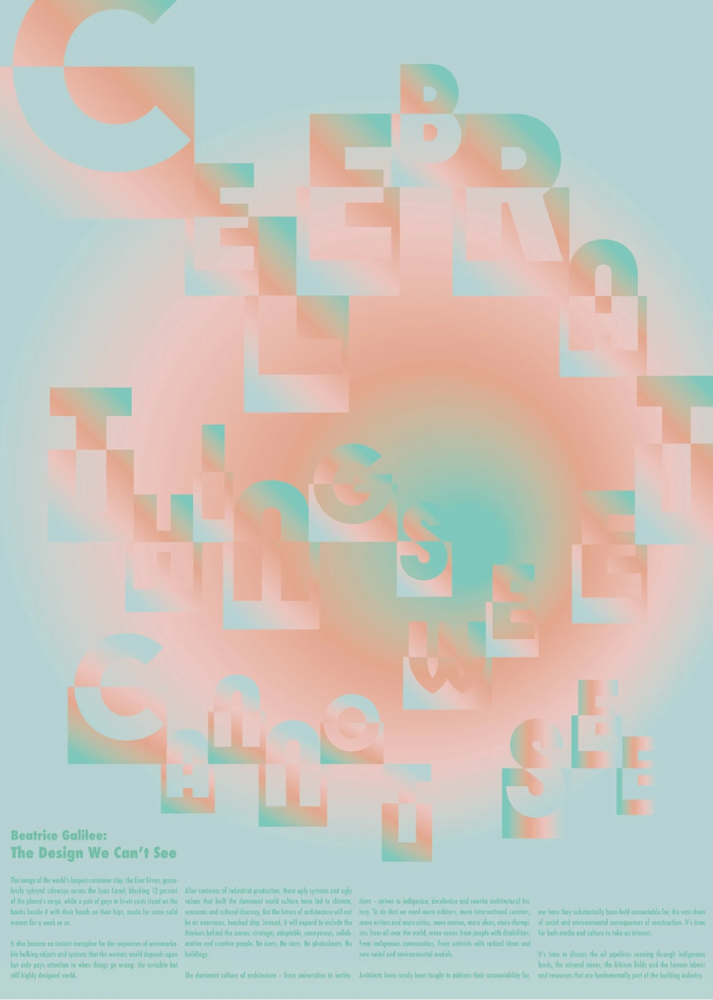
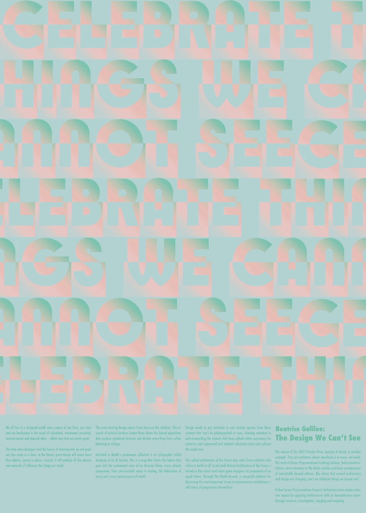
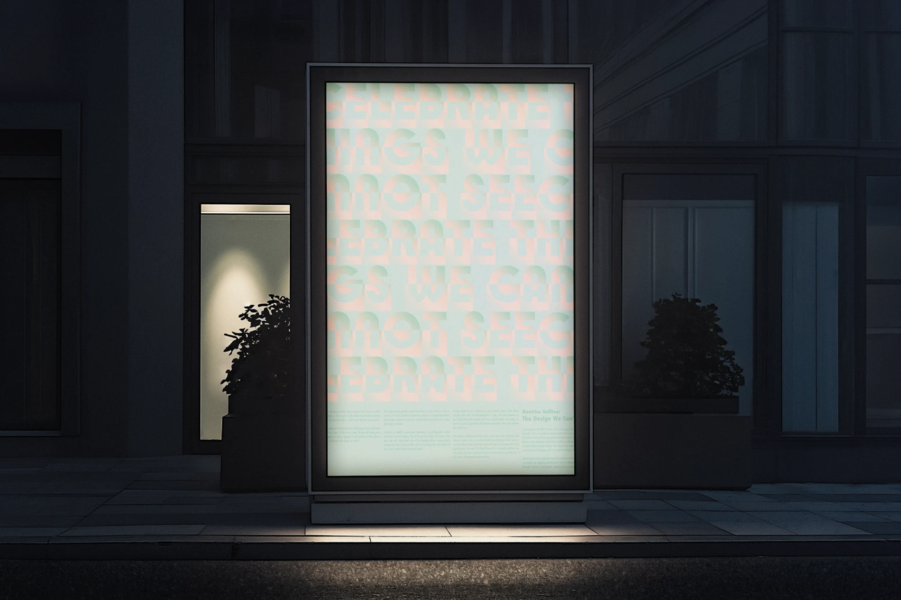

The Design
We Can’t See.
Making visible the systems, labor and structures that shape our world — even when we cannot see them.

Manifesto poster / Environmental mockup01 / 04
TYPEManifesto Poster
DISCIPLINESTypography / Graphic Design
REFERENCEBeatrice Galilee
The Design We Can’t See
The Design We Can’t See
01 / CONCEPT
What is designed, but unseen?
This manifesto poster responds to Beatrice Galilee’s writing about design beyond the visible object: systems, infrastructures, labor, and power that shape everyday life.
Oversized letterforms overlap, fragment, and fade into pastel gradients. The typography is both an image and a message: something present, yet difficult to fully perceive.
02 / TYPOGRAPHIC SYSTEM
Language as image.
Two compositions explore different densities: one fragmented and atmospheric, the other rhythmic and repeated.


03 / IN CONTEXT
Seen after dark.
The illuminated street setting turns a poster about unseen design into an object that emerges from darkness.

MANIFESTO / TYPOGRAPHY← All projects